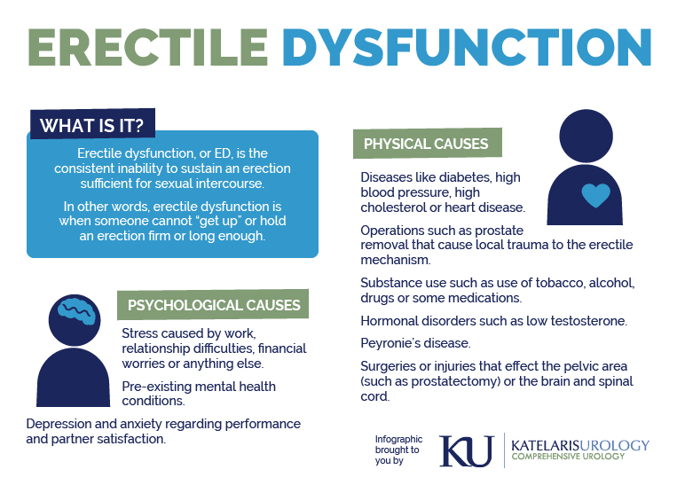
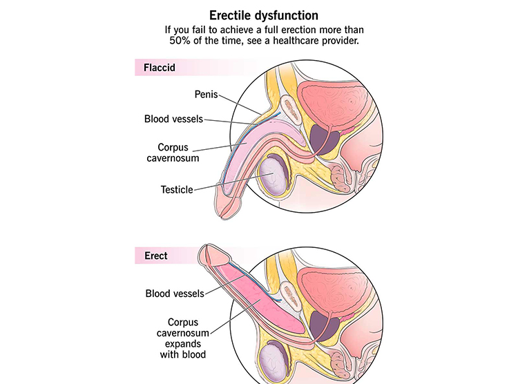
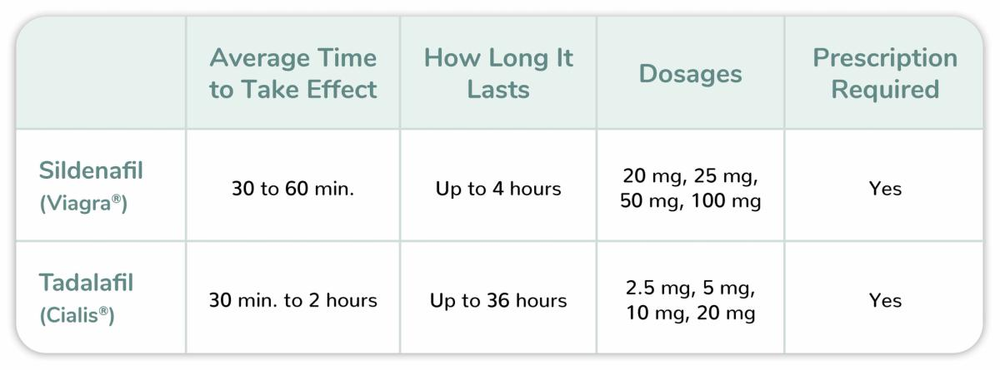

Erectile dysfunction (ED) is far more common than most men realize. It is not just a “psychological issue” — in many cases, it is directly related to blood flow, vascular health, and nervous system function.
Understanding how it works is the key to choosing effective treatment instead of relying on random solutions.
---
An erection is a vascular process. It depends on proper blood flow into the penile tissues and the ability of blood vessels to relax.
The key mechanism involves nitric oxide (NO), which triggers the relaxation of smooth muscles and allows blood to fill the corpora cavernosa.
If this process is disrupted — even slightly — erectile function becomes weaker or inconsistent.
---In many cases, ED is not caused by one factor but by a combination of several.
---
The most effective and widely used medications belong to the class of PDE5 inhibitors.
Example: Sildenafil
Works relatively quickly and is effective for short-term use.
---Example: Tadalafil
Known for its long duration of action (up to 36 hours), making it more flexible.
---PDE5 inhibitors enhance the natural erectile response. They do not create an erection on their own but improve blood flow when stimulation occurs.
Erectile dysfunction is treatable in most cases. The key is understanding the underlying mechanism and choosing the right approach.
Modern medications provide reliable results — when used correctly.